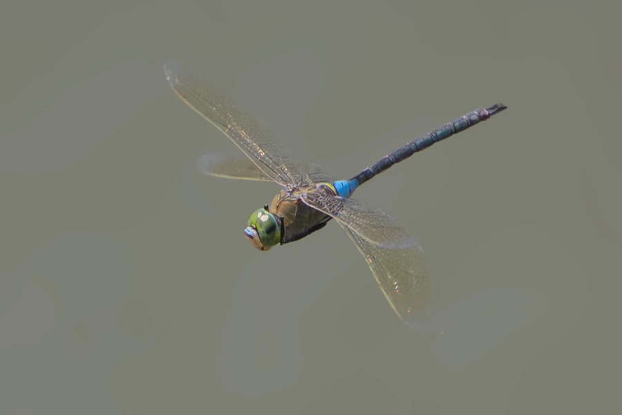

昆虫 · 动物界
碧伟蜓 Anax parthenope

大型蜻蜓，雄虫腹部基部呈蓝绿色，飞行力强，常在池塘和湖泊上空巡逻捕食蚊蝇，中国各地水域常见。
- 分类
- 门节肢动物门纲昆虫纲目蜻蜓目科蜓科属伟蜓属
- 栖息环境
- 池塘、湖泊、水田和缓流边缘，成虫在空中巡逻
- 地理分布
- 中国大部分地区，以及欧洲、亚洲其他地区和北非
- 保护级别
- 暂无评估
物种志
碧伟蜓成虫体长约 6–7 cm，翅展可达 9–10 cm，是中国较大的蜻蜓之一。雄虫复眼绿色，胸部和腹部黄绿色，腹部基部有一节蓝绿色，其余部分黄褐色带黑斑；雌虫体色偏黄褐。复眼大而相连，视野开阔，便于在空中追捕猎物。
成虫飞行力强，常在池塘、湖泊和缓流上空来回巡逻，捕食蚊、蝇、蛾等飞虫，也会停在水边植物上休息。幼虫（水虿）生活在水草间，捕食水生昆虫和小鱼。碧伟蜓一年发生一代，以幼虫越冬，春夏季羽化，分布在中国大部分地区以及欧洲、亚洲其他地区和北非。它是水域生态系统的常见成员，能大量捕食蚊蝇，被视为有益昆虫，它常在水域上空来回飞行，很少长时间停歇。
形态与习性
- 食性成虫捕食蚊、蝇、蛾等飞虫；幼虫捕食水生小动物
- 体长约 6–7 cm，翅展 9–10 cm
- 识别雄虫腹部基部有一节蓝绿色
- 生活史一年发生一代，以幼虫越冬
- 习性飞行力强，常在水面上空来回巡逻
- 生态作用大量捕食蚊蝇，是有益昆虫
趣味知识
- 碧伟蜓是体型较大的蜻蜓，翅展能达到 10 厘米左右。
- 雄虫腹部基部那节蓝绿色，是识别它的关键特征。
- 它的幼虫水虿生活在水里，捕食水生昆虫和小鱼。
生态关系
- 捕食 → 淡色库蚊 蜻蜓捕食蚊虫